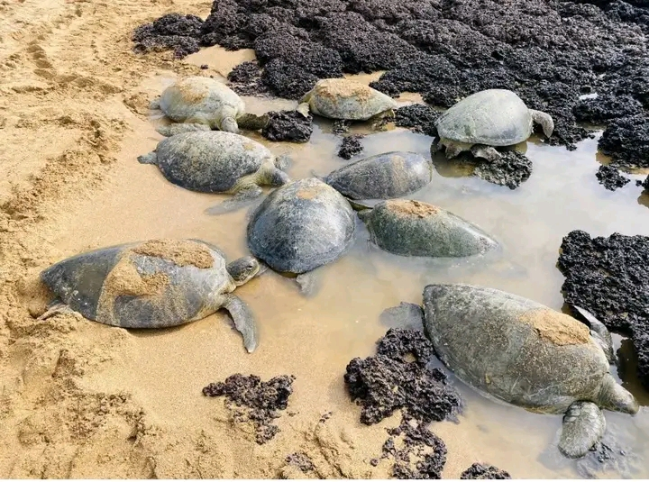
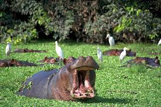

Biodiversidade da Guiné-Bissau

A Guiné-Bissau possui uma rica biodiversidade, a biodiversidade corresponde à variedade de formas de vida existentes no planeta, incluindo os diferentes ecossistemas, espécies e recursos genéticos. A Guiné-Bissau destaca-se como um país rico em biodivesidade devido à sua diversidade de habitats naturais, como florestas tropicais, savanas, mangais, rios e zonas costeiras. Este trabalho tem como objectivo analizar a biodiversiodade da Guiné-Bissau, destacando a sua fauna, flora, ecossistemas, importância socioeconómicaa e os principais desafios relacionados com a conservação ambiental. A metodologia utilizada baseou-se em pesquisa bibliográfica, recorrendo a livros, artigos cientificos e relatórios de organizações ambientais. Conclui-se que a biodiversidade guineense constitui um património natural de grande valor sendo fundamental a implementação de políticas de conservação e práticas sustentáveis para garantir a sua preservação..
 Bem-vindo ao meu site da Biodiversidade da Guiné-Bissau
Clique nos links acima para navegar pelas paginas.